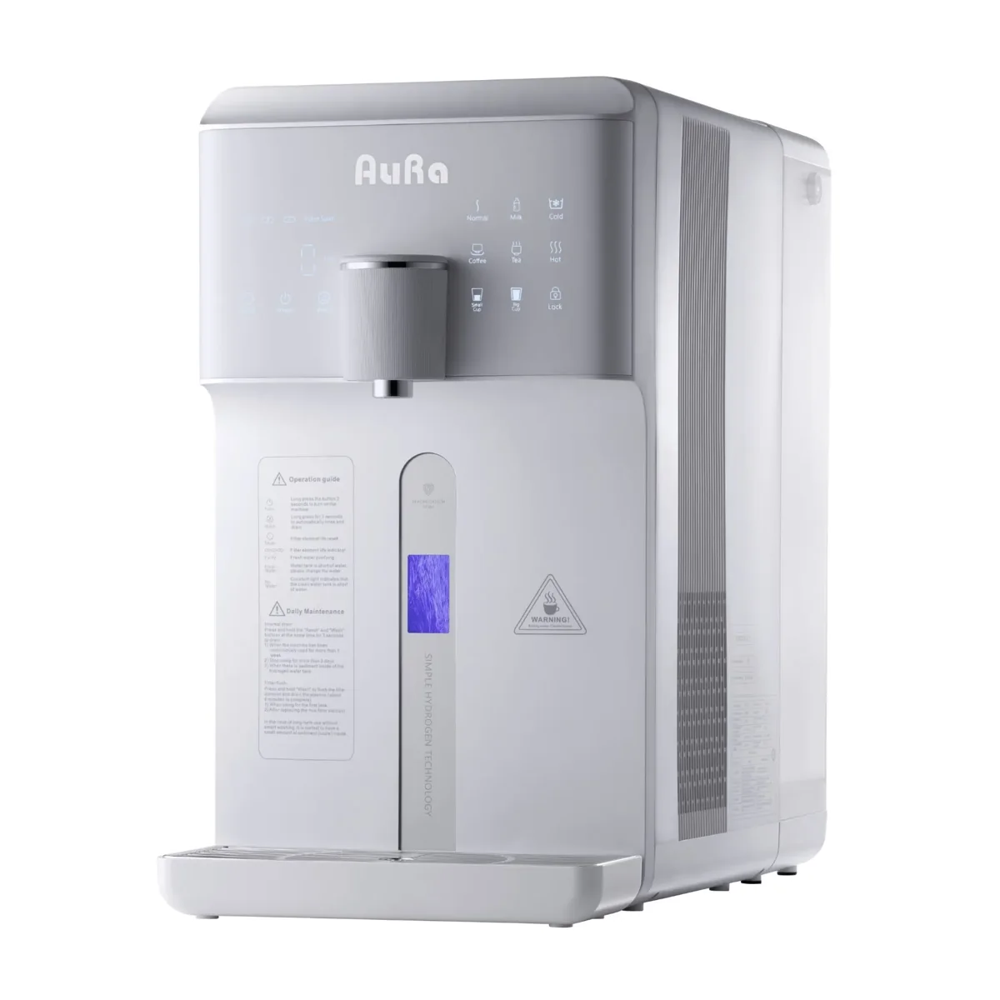

AORA AORA W23 Auftisch Osmoseanlage mit 6 Temperaturstufen (~15-100°C) | mit Tank | 5 stufige Filterung | kalkfreies Trinkwasser | Mobile Umkehrosmoseanlage | Wasserstoff-Generator
AORA W23 Auftisch Osmoseanlage mit 6 Temperaturstufen (~15-100°C) | mit Tank | 5 stufige Filterung | kalkfreies Trinkwasser | Mobile Umkehrosmoseanlage | Wasserstoff-Generator: Wasseraufbereitungssystem von AORA mit den auf der offiziellen Produktseite veröffentlichten Leistungs-, Filter- und Ausstattungsdaten.
Technische Daten
| Artikelnummer | 20904 |
| Farbe Anlage | Weiß oder Schwarz |
| Ausgabearten | Still oder Still gekühlt |
| Farbe | Schwarz oder Weiß |
| Bauart | Auftisch |
| Anschlusstyp | Tank |
| Osmose | Ja |
Beschreibung
AORA W23 Auftisch Osmoseanlage mit 6 Temperaturstufen (~15-100°C) | mit Tank | 5 stufige Filterung | kalkfreies Trinkwasser | Mobile Umkehrosmoseanlage | Wasserstoff-Generator: Wasseraufbereitungssystem von AORA mit den auf der offiziellen Produktseite veröffentlichten Leistungs-, Filter- und Ausstattungsdaten.
Datenhinweis
Preis, Bild und technische Angaben stammen von der verlinkten offiziellen Produktseite. Varianten und Verfügbarkeit können sich ändern.